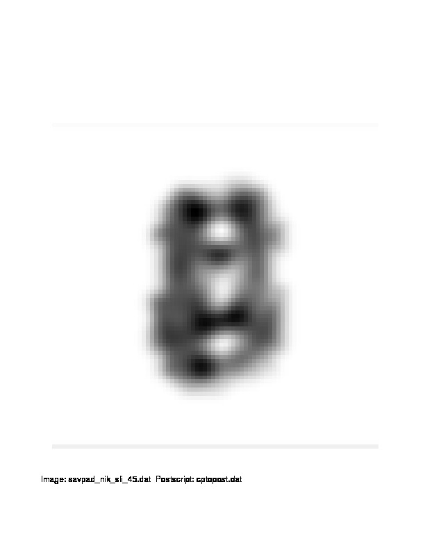

| .OPERATION: | CP TO POST | ; Copy SPIDER image To POSTSCRIPT |
| .SPIDER INPUT FILE: | savpad_nik_sli_45 | ; SPIDER image (input) |
| .POSTSCRIPT OUTPUT FILE: | cptopost | ; POSTSCRIPT file (output) |
| .MIN AND MAX DENSITIES FOR THRESHOLDING: | 0 255 | ; No thresholding |
| .DESIRED SIZE IN CM (OR <CR> for 18cm): | 18 | ; 18 cm |
| .BACKGROUND VALUE 0 (BLACK) - 255 (WHITE), (-1 - SKIP): | 255 | ; White |
| .PRINT NOW? (Y/N): | No | ; No print |
| INPUT IMAGE |
|---|
|
| savpad_nik_sli_45 |
| POSTSCRIPT IMAGE |
|---|
|  |
| cptopost |